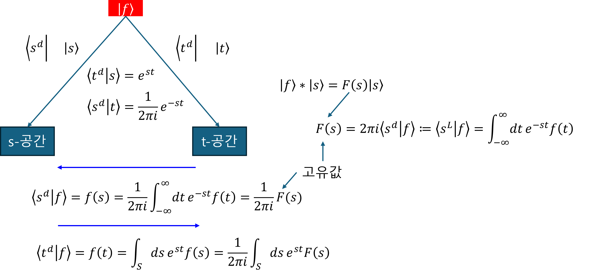

(b) Laplace transform I

1. Eigenvector & eigenvalue of LSI systems
연산자 $|h\rangle\ast$ 의 고유값과 고유벡터
$$ \text{eigenvalue}: \langle s^L|h\rangle=\int_{-\infty}^{\infty} dt h(t) e^{-st},\quad \langle s^L|t\rangle=e^{-st} $$$$ \text{eigenvector}: |s\rangle,\quad \langle t|s\rangle=e^{st} $$proof)
$$ |h\rangle\ast|s\rangle=H(s)|s\rangle $$위의 식을 토대로,
$$ \langle t|(|h\rangle\ast)|s\rangle =\int^{\infty}_{-\infty}d\tau h(\tau) s(t-\tau) $$$$ \langle t|H(s)|s\rangle =H(s)\langle t|s\rangle =H(s) s(t) $$$\langle t|s\rangle=s(t)=e^{st}$ 라고 하면,
$$ \int^{\infty}_{-\infty}d\tau h(\tau) s(t-\tau) =\int^{\infty}_{-\infty}d\tau h(\tau) e^{s(t-\tau)} =\left(\int^{\infty}_{-\infty}d\tau e^{-s\tau}h(\tau) \right)e^{st} $$고유값을 라플라스 변환 이라고 하며, 추출(변환) 연산자 로 표현해 보자.
$$ H(s)=\langle s^L|h\rangle=\int_{-\infty}^{\infty} dt e^{-st} h(t) $$$$ \langle s^L|t\rangle=e^{-st} $$2. “$|s\rangle$” & “$\langle s^L|$” & “$\langle s^d|$”
(1) $|s\rangle$ 은 비직교 기저
- if $\sigma\ne 0$, $|s\rangle$ 은 비직교 기저이다.
- if $\sigma= 0$, $|s\rangle$ 은 직교 기저이다.
proof)
$$ \langle s|s'\rangle =\int dt e^{s^\ast t}e^{st} = \int dt e^{(s^\ast+s)t} $$- if $\sigma\ne 0$, 발산하기 때문에, 적분값이 존재하지 않음, $\delta$ 함수가 아니므로, $|s\rangle$은 비직교 기저
- if $\sigma= 0$, 분포수렴하기 때문에, 적분값은 $2\pi\delta(\omega-\omega’)$, $\delta$ 함수이나, 1이 아닌 상수가 곱해져 있으므로, 비정규 직교기저
(2) $\langle s^L|$ & $\langle s^d|$
$$ \langle s^L|s'\rangle=2\pi i\delta(s-s'),\quad \langle s^d|=\frac{1}{2\pi i}\langle s^L| $$proof)
브롬위치 적분을 사용하면,
$$ \langle s^L|s'\rangle =\int dt e^{-(s-s')t} =2\pi i \delta(s-s') $$따라서, 기저 $|s\rangle$에 대한 dual basis 는
$$ \langle s^d|=\frac{1}{2\pi i}\langle s^L| $$3. 스팩트럼 분해
벡터 $|h\rangle$는 ‘설계도(DNA)’ 이고, 연산자 $|h\rangle\ast$는 ‘설계도대로 작동하는 기계’ 이다.
proof)
연산자는 스팩트럼 분해에 의해서,
$$ |h\rangle\ast = \int ds (\langle s^L|h\rangle)|s\rangle\langle s^d| $$시스템 벡터는 고유벡터로 표현할 수 있다.
$$ |h\rangle = \int ds (\langle s^d|h\rangle)|s\rangle = \frac{1}{2\pi i}\int ds (\langle s^L|h\rangle)|s\rangle $$4. 라플라스 변환의 관점
아래는 동일한 것을 다른 관점으로 설명한 것이다.
(1) 관점1: 라플라스 변환은 convolution으로 모두 귀결되는 LSI 연산자의 eigenvalue(고유값)을 찾아 내는 방법이다.
$$ \langle s^L|h\rangle =\int_{-\infty}^{\infty}dt\left[e^{-st}h\left(t\right)\right] $$(2) 관점2: 라플라스 변환은 벡터의 좌표를 찾아 내는 방법이다. 직관적으로 표현하기 위해, 아래와 같이 사용한다.
$$ \langle s^d|h\rangle =\frac{1}{2\pi i}\langle s^L|h\rangle $$6. 라플라스 역변환
$|s\rangle$에 대한 기저를 $|t\rangle$에 대한 기저로 옮기는 것이다.
$$ \langle t|h\rangle = \langle t|\left(\int ds \langle s^d|h\rangle|s\rangle \right) = \frac{1}{2\pi i}\int ds \langle s^L|h\rangle e^{st} $$7. 라플라스 변환의 활용
(1) 미분 방정식
미분방정식을 대수 방정식으로 바꾼다. 단방향 라플라스 변환을 사용하면, 초기값이 있는 문제를 쉽게 다룰 수 있다.
$$ y''-7y'=7e^{t}\implies |f_1\rangle+|f_2\rangle=|f_3\rangle $$- 관점1: 라플라스 변환은 convolution으로 모두 귀결되는 LSI 연산자의 eigenvalue(고유값)을 찾아 내는 방법이다.
- 관점2: 라플라스 변환은 벡터의 좌표를 찾아 내는 방법이다.
(2) 성분 추출
파형(파동) $f$에 감쇄를 포함한 정현파 성분 이 얼마만큼 되는지를 추출하는데 사용할 수 있다.
$$ \langle s^L|f\rangle=\int_{-\infty}^{\infty} dt e^{-st} f(t) $$8. 주의사항
Laplace transform은 다양한 함수에 적용할 수 있는 강력한 수학적 도구이다. 하지만, 이 변환을 사용하여 시스템의 출력을 전달 함수와의 곱, 즉 $Y(s) = H(s)X(s)$로 간단하게 계산하는 것은 시스템이 반드시 선형 이동 불변(LSI)일 때만 유효하다.
비선형 시스템은 중첩의 원리를 만족하지 않으므로, 임펄스 응답 h(t)와 전달 함수 H(s)라는 개념 자체가 시스템 전체를 대표할 수 없다. 따라서 이 문서에서 다루는 모든 시스템 분석 기법은 LSI 시스템을 전제로 한다.